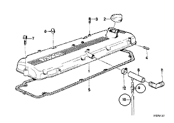
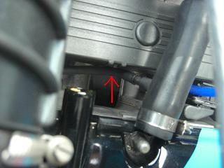
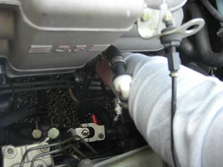
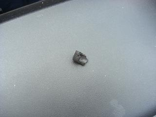
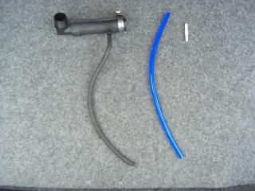
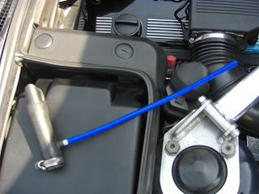
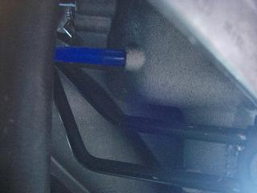
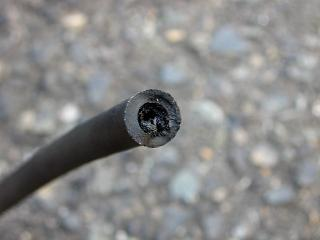

 交換するのは、この9番と10番です。 |
 このホースです。この先は、インマニを左から見て後ろよりの下側へつながっています。 |
 この辺りから手をつっ込むと作業しやすい＾＾しかし、見えないので手探りでの作業に。。 |
 熱なのか、焼けたオイルなのか固着しててなかなかホースが抜けない。。無理やり引っ張ると破片がインマニに残ってしまい 手探りに加え、工具が入らないので外すのが大変だった＾＾； |
 4パイのシリコンホースとコネクターを用意します。これらは、オートバックスなどで簡単に手に入ります。 |
 あとはセットして元通りに取り付けていく。 |
 インマニ下側の接続部分 |
 交換したホースは、ヘドロのようなものでほとんど塞がれていました。。乗った感じ変化は感じませんが、精神的な効果は抜群なのだ（笑 |